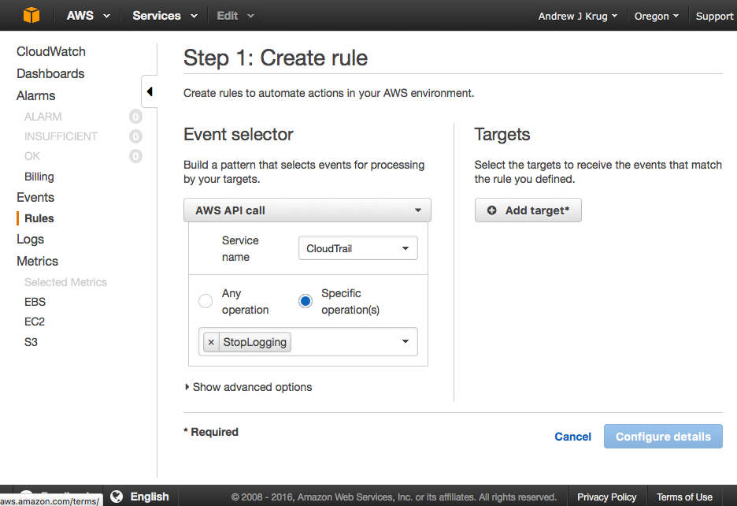
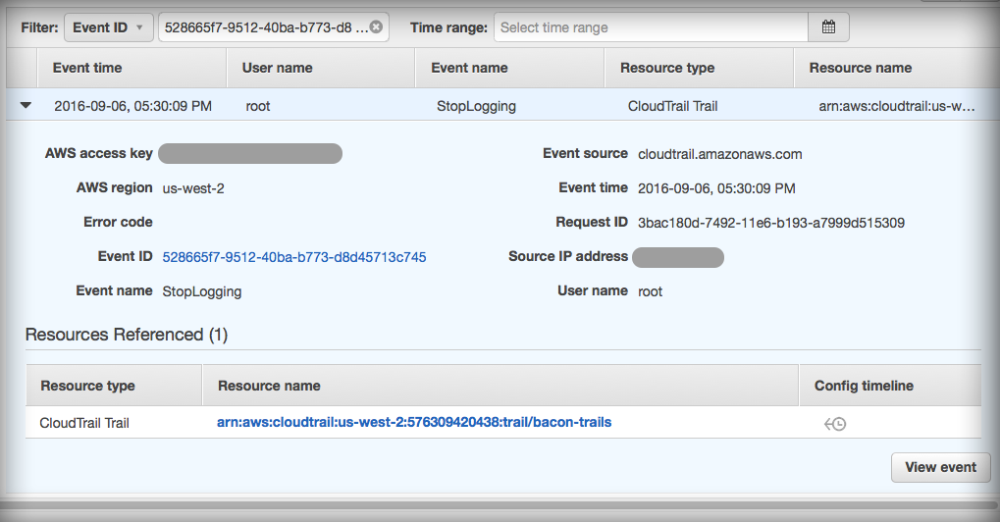
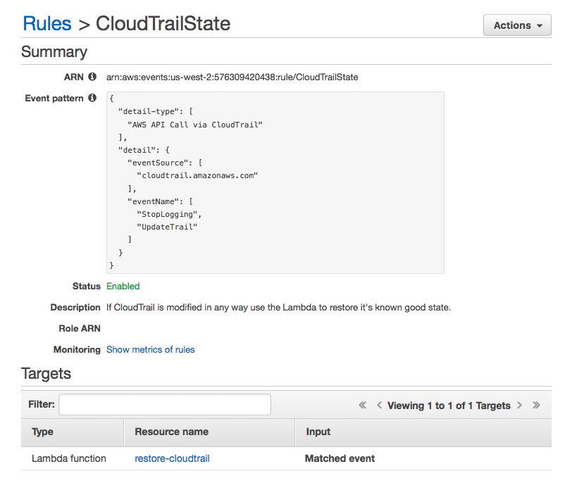

By: Andrew Krug @andrewkrug
Part 1
This has been a really great year for analysis of Cloud Security on Amazon. As part of presenting the ThreatResponse tool kit the team and I have been out seeing all of the best talks on the security scene and getting hands on with some very clever attack patterns. This series of blog articles beginning today and culminating in our DerbyCon talk will explore those clever attack patterns in some detail and present workarounds for dealing with these types of attacks in a live environment.
What are the scariest attacks of summer for Amazon Web Services users? They mainly boil down to persistence methods for maintaining control of an AWS account well beyond disabling a compromised access key. At BlackHat USA 2016 we heard from Dan Amiga and Dor Knafo in their talk, Account Jumping Post Infection Persistency & Lateral Movement in AWS.
This presentation focused on two major areas:
This was of particular interest to us as an incident response and threat mitigation project due to the fact that we were unsure that our tool suite ThreatResponse addressed all these varietals of attack pattern.
When we talk about evasion techniques in Amazon Web Services we get to the true spirit of the hacker and what really is a hack. All of the evasion techniques we saw exploited something in the Amazon Web Services API that was just a feature to remain undetected or alter evidence.
Disclaimer
It is important to point out that all of these evasion techniques require a very high level of access to take place inside of your account. This further illustrates that there is really no substitute for concepts like separation of responsibility and least privilege computing.
An Australian Security Researcher by the name of Daniel Grzelak who maitains a blog called CyberFree https://danielgrzelak.com was the first to present some of these techniques in blogs earlier in 2016.
Any Cloud Security professional that has been around will tell you, “The value of CloudTrail logs can not be understated.” What information is stored in a CloudTrail log? All of the calls to the API and actions taken over time. This is incredibly valuable when it comes time to perform timeline reconstruction on a compromised AWS account. Without CloudTrail it becomes an arduous task to determine the scope of the incursion. So you can imagine as an attacker how awesome it would be to destroy this data or cause logging to not take place when you don’t want it to.
We don’t need to show you how to perform this attack. Mr. Grzelak does a fine job of that here. https://danielgrzelak.com/disrupting-aws-logging-a42e437d6594#.2m18u72vu In short this attack simply boils down to stopping logging in all or some regions of the AWS account.
What does all or one region really mean? In Amazon Web Services CloudTrail logs are sent to a “home region”. In order to consolidate these from multiple regions you need to have all regions log back to a central bucket via a feature called multi-region logging. So a stealthy attacker may only elect to disable one region at a time.
What are the forensic artifacts produced by this?
As incident responders in the Cloud we are interested in how might detect this behavior. Simply disabling CloudTrail is relatively noisy and can be detected with the following:
Both of these however actually use CloudTrail as the mechanism for detecting when CloudTrail is stopped. CloudWatch events will probably be the fast of the two since Config Rules takes time to perform and evaluation and for that to make it back into the logs.
CloudWatch Events can fire within 2-4 minutes of an event occurring.
How do we setup a CloudWatch Event to check for CloudTrail Disable?

As you can see in the above shot simply setting up a CloudWatch event is quite simple to monitor the start and stop of CloudTrail as a service.
The Last CloudTrail Event
The act of disabling itself also produces an event sort of as a last in CloudTrail. 
So forensically we know that this type of activity is detectable and has some artifacts. However, in order to really be effective and monitor disabling for every region in the account we need to set up this kind of CloudWatch event for each region or use a 3rd party monitoring service.
Now simply stopping the log is a rather noisy activity so it’s very easy to detect and respond to. Even @danielgrzelak says, “Your target may be actively monitoring both of those API calls so those tactics are probably best left to nights of drunken regret and forcefully purged with tequila.”
We can do a couple different things as a means of responding to this type of activity.
In this sense “Security Cloud” is defined as another AWS account with separate security boundaries receiving logs from the organizations accounts running workloads.
How it works.

In the diagram above we see that all the usual services are feeding CloudTrail data. CloudWatch events is monitoring that dataflow to see if the CloudTrails are stopped. If CloudTrail is stopped a serverless Lambda function is then fired to restore the CloudTrail configuration to a known good state.
How to set it up
Step 1. Set up the execution role for the Lambda Function.
Execution roles in AWS allow “service account” style functionality for servers or Lambdas
The example version of this policy is posted here:
https://github.com/ThreatResponse/defense-against-the-dark-arts/tree/master/part-1/cloudwatch-restore-cloudtrail
Just to break it down all this policy does is allow Lambda to interact with your CloudTrails.
{
"Version": "2012-10-17",
"Statement": [
{
"Action": [
"cloudtrail:DescribeTrails",
"cloudtrail:GetTrailStatus",
"cloudtrail:StartLogging"
],
"Effect": "Allow",
"Resource": "*"
},
{
"Effect": "Allow",
"Action": [
"logs:CreateLogGroup",
"logs:CreateLogStream",
"logs:PutLogEvents"
],
"Resource": [
"*"
]
}
]
}
Step 2. - Create the Lambda Function
Next we want to create the Lambda Function that uses that role to execute. Everything can pretty much remain default with the exception of this role. Be sure you don’t accidentally associate it with a VPC.
Pro Tip : Lambdas can talk with AWS APIs without being in a VPC.
import boto3
import json
class CloudTrail(object):
def __init__(self, trailArn):
self.client = boto3.client('cloudtrail')
self.arn = trailArn
self.status = self.client.get_trail_status(
Name=trailArn
)
"""Check to see if Global Events are Active"""
def globalEventsActive(self):
if self.status[IncludeGlobalServiceEvents] == True:
return True
else:
return False
"""Restart Logging on Trail ARN"""
def EnableTrail(self):
try:
response = self.client.start_logging(
Name=self.arn
)
return True
except:
return False
"""Check to see if CloudTrail is Logging"""
def isLogging(self):
if self.status['IsLogging']:
return True
else:
return False
""" Re-enable sending GlobalEvents to the Log"""
def globalLogging(self):
response = self.client.update_trail(
Name=self.arn,
IncludeGlobalServiceEvents=True
)
"""
If CloudTrail is already enabled for all regions
do nothing otherwise restore CloudTrail to
a known good state based on a number of assumptions.
"""
def lambda_handler(event, context):
print event
"""Strip trail Amazon ARN from Event"""
trailArn = event['detail']['requestParameters']['name']
"""Instantiate CloudTrail Object"""
c = CloudTrail(trailArn)
"""Enter an infinite loop waiting to return to known good state"""
while c.isLogging() == False:
c.EnableTrail()
"""Fix Global Event Logging"""
if c.globalEventsActive() == False:
c.globalLogging()
Step 3. Finally set up the CloudWatch Event to Trigger this Lambda to run each time CloudTrail is interrupted.

This is the Amazon CloudWatch Events method of response to basic logging disruption.
Keep an eye out for the next post in the series on Defense Against the Dark Arts for the Cloud where we’ll look at the difference between local and global service delivery in addition to encrypting your logs against KMS keys.